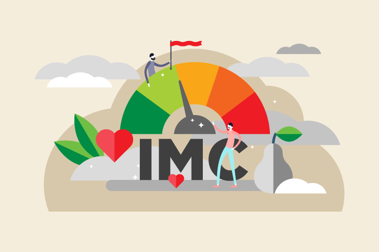
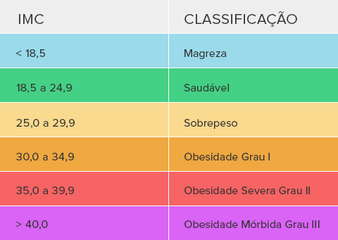

👶 Saúde de mães e crianças
3.1 Reduzir a mortalidade materna global para menos de 70 mortes por 100.000 nascimentos até 2030.
3.2 Acabar com mortes evitáveis de recém-nascidos e crianças menores de 5 anos.
Objetivo de Desenvolvimento Sustentável
Garantir o acesso à saúde de qualidade e promover o bem-estar para todos, em todas as idades
3.1 Reduzir a mortalidade materna global para menos de 70 mortes por 100.000 nascimentos até 2030.
3.2 Acabar com mortes evitáveis de recém-nascidos e crianças menores de 5 anos.
3.3 Acabar com epidemias como AIDS, tuberculose e malária, além de combater outras doenças transmissíveis.
3.4 Reduzir em um terço as mortes prematuras causadas por doenças como problemas cardíacos, diabetes e câncer.
3.5 Fortalecer a prevenção e o tratamento do uso de drogas e álcool.
3.6 Reduzir o número de mortes e ferimentos causados por acidentes de trânsito.
3.7 Garantir acesso universal à saúde sexual e reprodutiva e ao planejamento familiar.
3.8 Garantir que todas as pessoas tenham acesso a serviços de saúde essenciais e medicamentos seguros e acessíveis.
3.9 Reduzir mortes e doenças causadas por poluição, produtos químicos perigosos e contaminação ambiental.
3.a Fortalecer políticas de controle do tabaco.
3.b Apoiar pesquisas e desenvolvimento de vacinas e medicamentos acessíveis.
3.c Aumentar investimentos em saúde e formação de profissionais da área.
3.d Melhorar sistemas de alerta e preparação para riscos globais de saúde.
O Índice de Massa Corporal (IMC) ajuda a identificar se seu peso está adequado para sua altura. Este projeto também promove o ODS 3 – Saúde e Bem-Estar, incentivando hábitos saudáveis para uma vida melhor.


Nosso projeto apoia o Objetivo de Desenvolvimento Sustentável 3 da ONU, que busca assegurar uma vida saudável e promover o bem-estar para todas as pessoas.
Incentivamos hábitos saudáveis como alimentação equilibrada, prática de exercícios físicos e cuidados com a saúde mental.
Saiba mais